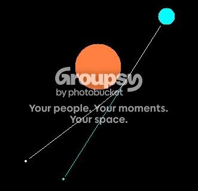

I've been pondering upon this for a while: why does light bend because of gravity? I don't understand, because, to my knowledge, gravity is a force that acts between two masses. But photons are massless, at least I thought so, which allows them to travel at the speed of light. So why? What way is there around this that allows light to be bent?
My understanding of physics says that light can only change course when reflected, refracted or diffracted. It's probably considered wrong now, it having been a decade since I last studied physics.
About photons being massless:
Photons have a rest mass of zero. This means that if a photon is at rest, it has no mass and is therefore non-existence. Photons, however, move at the speed of light. This endows them with relativistic mass.
As objects approach the speed of light, they gain mass and volume (and lose time), according to the Lorentz transforms. As an object with a rest mass of greater than zero approaches the speed of light, its mass becomes greater and greater. The energy to accelerate this mass also becomes higher and higher. If an object with a rest mass of greater than zero were to reach the speed of light, its relativistic mass would become infinite. Therefore, to accelerate a mass to the speed of light, you'd need infinite energy; this is why nothing can acheive the speed of light.
Except photons.
Photons can acheive the speed of light because their rest mass is zero. However, because they move at the speed of light, their relativistic mass is different (0/0, or 0*infinity). By ordinary arithmetic, this would still leave them with a relativistic mass of zero. However, for one reason or another, this provides them with a mass of "1". It's a unitless 1, but the relativistic mass of a photon has been measured and proven to be non-zero. The relativistic mass of a photon might actually be the single, most indivisible unit of mass. This would help justify Grand Unified Theory.
So, photons are affected by gravity because they are particles (as well as waves). And those particles have a very slight mass because they have been accelerated to relativistic speeds.
Photons have a rest mass of zero. This means that if a photon is at rest, it has no mass and is therefore non-existence. Photons, however, move at the speed of light. This endows them with relativistic mass.
As objects approach the speed of light, they gain mass and volume (and lose time), according to the Lorentz transforms. As an object with a rest mass of greater than zero approaches the speed of light, its mass becomes greater and greater. The energy to accelerate this mass also becomes higher and higher. If an object with a rest mass of greater than zero were to reach the speed of light, its relativistic mass would become infinite. Therefore, to accelerate a mass to the speed of light, you'd need infinite energy; this is why nothing can acheive the speed of light.
Except photons.
Photons can acheive the speed of light because their rest mass is zero. However, because they move at the speed of light, their relativistic mass is different (0/0, or 0*infinity). By ordinary arithmetic, this would still leave them with a relativistic mass of zero. However, for one reason or another, this provides them with a mass of "1". It's a unitless 1, but the relativistic mass of a photon has been measured and proven to be non-zero. The relativistic mass of a photon might actually be the single, most indivisible unit of mass. This would help justify Grand Unified Theory.
So, photons are affected by gravity because they are particles (as well as waves). And those particles have a very slight mass because they have been accelerated to relativistic speeds.
Ah, thanks. It all makes sense now...
Thank you for sharing another nugget of knowledge with the world, that I probably couldn't otherwise find on the internet *kicks Google*
Thank you for sharing another nugget of knowledge with the world, that I probably couldn't otherwise find on the internet *kicks Google*
I read a biography of Einstien over the summer and it did a really good job of explaining relativity and its effects. I'll try and help you picture the concept.
Before Einstein, space was considered constant, a medium in which all motions took place. The shortest distance between two objects is a straight line. Einstein proposed that space is highly variable, that the shortest distance between two objects is not always a straight line. This required the belief that space was four-dimensional, not three-dimensional, as previously thought. This whole concept is extraordinarily hard to picture, so we must use a metaphor: You may have heard of the sheet and ball model of gravity. Basically, it says that space can be imagined as a sheet, stretched perfectly flat. Something that can produce gravitational forces, such as a planet, can be imagined as a ball resting on the sheet. Naturally, this ball will create an indentation in the sheet, such that the area around the ball will slope down, towards the bottom of the ball. If there are two balls near each other, they will "roll" together and touch. If you were to roll one ball so that it passes near another larger ball, it will curve, and come to rest lying against that ball.
Look at the image below. The orange circle is the sun, the smaller blue one is the earth and the much smaller white dot is a star. The line shows the light emitted by the star's path. You can see it curves a bit and makes it appear that the star was actually where the blue dot is.
Thinking about this idea, Einstein used his general relativity field equations and calculated that light must bend a certain amount when it passes the Sun. Seven years later, during a solar eclipse, he was proved correct.
Before Einstein, space was considered constant, a medium in which all motions took place. The shortest distance between two objects is a straight line. Einstein proposed that space is highly variable, that the shortest distance between two objects is not always a straight line. This required the belief that space was four-dimensional, not three-dimensional, as previously thought. This whole concept is extraordinarily hard to picture, so we must use a metaphor: You may have heard of the sheet and ball model of gravity. Basically, it says that space can be imagined as a sheet, stretched perfectly flat. Something that can produce gravitational forces, such as a planet, can be imagined as a ball resting on the sheet. Naturally, this ball will create an indentation in the sheet, such that the area around the ball will slope down, towards the bottom of the ball. If there are two balls near each other, they will "roll" together and touch. If you were to roll one ball so that it passes near another larger ball, it will curve, and come to rest lying against that ball.
Look at the image below. The orange circle is the sun, the smaller blue one is the earth and the much smaller white dot is a star. The line shows the light emitted by the star's path. You can see it curves a bit and makes it appear that the star was actually where the blue dot is.

Thinking about this idea, Einstein used his general relativity field equations and calculated that light must bend a certain amount when it passes the Sun. Seven years later, during a solar eclipse, he was proved correct.
Light is effected by gravity because gravity distorts space. Light moves in geodesics (the shortest possible paths between two points). In flat space a geodesic is a straight line. However, in curved space (ie. a gravitational field) it is a curve, and thus light curves.
You can think of it this way. On a flat piece of paper, the shortest path between two points is a straight line. On a globe, the shortest path between two points is curved because you have to follow the curve of the surface. For example, when travelling from the north pole to the south pole, the shortest path is a "straight" line south, but this line actually traces out a semi-circle because you follow the curve of the planet. Light works in a similar way, but in four dimensions.
You can think of it this way. On a flat piece of paper, the shortest path between two points is a straight line. On a globe, the shortest path between two points is curved because you have to follow the curve of the surface. For example, when travelling from the north pole to the south pole, the shortest path is a "straight" line south, but this line actually traces out a semi-circle because you follow the curve of the planet. Light works in a similar way, but in four dimensions.
So, wait, photons exist because they're moving at lightspeed? 
Because a photon has a rest mass of 0 and f=ma (force = mass * acceleration), any force on a photon will give it infinite acceleration - it will instantly be moving as fast as it is possible to move, which is the speed of light. They then have mass, as described by relativity (amongst other things).
Relativity is... strange. At least it's not as bad as quantum.
Relativity is... strange. At least it's not as bad as quantum.
*shudders at the thought of all this fancy physics talk*
I'm content with knowing that when I turn on the light, I can see better.
I'm content with knowing that when I turn on the light, I can see better.
I'm also fairly sure that the bend in light because of gravity is so insignificant no one can honestly tell, neither that its bend is large enough to change any equations or previous laws in calculating light, nor does it have an affect on us unless we're talking about viewing far off galaxies and stars.
blue tetris summed it up real nice.
much better than i could.
* goes off wondering if he can ask for blue's help on physics homework*
much better than i could.
* goes off wondering if he can ask for blue's help on physics homework*
I'm also fairly sure that the bend in light because of gravity is so insignificant no one can honestly tell, neither that its bend is large enough to change any equations or previous laws in calculating light
What do you mean, so insignificant that no one can honestly tell? It's very well supported by observational evidence, thank you very much. I'll assume you mean on the scale of a few dozen metres, in which case yes, it's not really significant.
nor does it have an affect on us unless we're talking about viewing far off galaxies and stars.
That's not really true. It also effects our view of the rest of our solar system slightly, including the sun. Not so much our view of the other side of the room.
Because a photon has a rest mass of 0 and f=ma (force = mass * acceleration), any force on a photon will give it infinite acceleration - it will instantly be moving as fast as it is possible to move, which is the speed of light. They then have mass, as described by relativity (amongst other things).
Doesn't that also mean that the force a photon exerts is m*a which... is... 0? So how does my photometer (basicly, a windmill that works on light rather than wind) work?

No, because the photon that hits your photometer is moving at lightspeed, and therefore has mass. Light has momentum, varying in proportion to it's wavelength.
Also, your photometer may not be powered (primarily) by the momentum of photons. I have one with panels that are black on one side and white on the other. Because the black side tends to heat up more, it creates a pressure difference in the air on each side of the panel, which makes it spin.
I'm also fairly sure that the bend in light because of gravity is so insignificant no one can honestly tell, neither that its bend is large enough to change any equations or previous laws in calculating lightWhat do you mean, so insignificant that no one can honestly tell? It's very well supported by observational evidence, thank you very much. I'll assume you mean on the scale of a few dozen metres, in which case yes, it's not really significant.
nor does it have an affect on us unless we're talking about viewing far off galaxies and stars.
That's not really true. It also effects our view of the rest of our solar system slightly, including the sun. Not so much our view of the other side of the room.
I was talking about real time physical interactions versus space. But yes, i guess that statement was a little rash in origin.
do you think we, as humans, are sensitive enough of a machine to notice this "mass" that light is exerting on us? (mass in such an infinitely small sense of the word) and thus the psychological connection to turning off a bright light thats beating on you and suddenly feeling "cooler" (temperature wise)
and what about "Schrdinger's cat?" are we giving the light mass because we are actively measuring it?
or is it like a theoretical mass (well no it cant be a theoretical mass or else we wouldn't see stars that are behind other stars or planets) ::rubs temples:: im soooo confused)
and what about "Schrdinger's cat?" are we giving the light mass because we are actively measuring it?
or is it like a theoretical mass (well no it cant be a theoretical mass or else we wouldn't see stars that are behind other stars or planets) ::rubs temples:: im soooo confused)
I was talking about real time physical interactions versus space.
Now you're just confusing me. Do you mean to imply that space is turn-based?
do you think we, as humans, are sensitive enough of a machine to notice this "mass" that light is exerting on us? (mass in such an infinitely small sense of the word) and thus the psychological connection to turning off a bright light thats beating on you and suddenly feeling "cooler" (temperature wise)
Er, no. You feel cooler when you turn of bright lights because they raise your temperature.
and what about "Schrdinger's cat?" are we giving the light mass because we are actively measuring it?
No, nothing remotely like that.
No, because the photon that hits your photometer is moving at lightspeed, and therefore has mass. Light has momentum, varying in proportion to it's wavelength.
Oh. *is still confused*
No no...i was talking about space with those astronauts and Russian missile satellites.I was talking about real time physical interactions versus space.Now you're just confusing me. Do you mean to imply that space is turn-based?